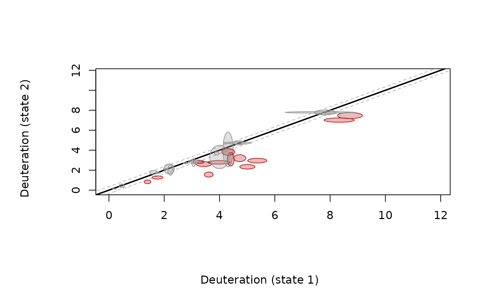
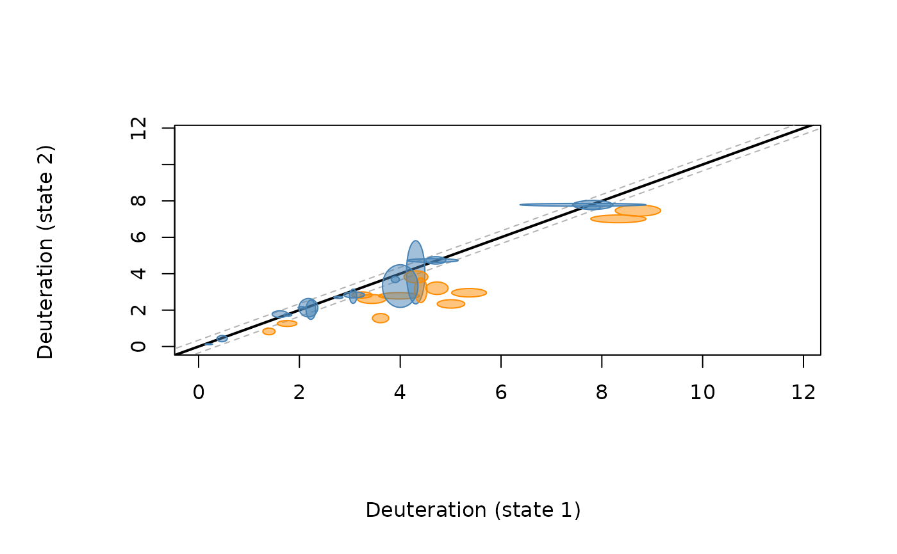

modification of the volcano plot. The volcano plot linearized. x and y axis are the deuteration for two states Deuteration can be as either % deuteration, uptake, or fraction deuteration
Usage
plot_fissure_vent(
df,
replicates = 3,
times,
state1,
state2,
alpha = 0.01,
pvalue = 0.01,
position_col = NA,
sd_source = "raw",
length1 = NA,
xlim = NULL,
ylim = NULL,
sig_col = "firebrick",
nonsig_col = "grey60",
fill_alpha = 0.3,
p_adjust = "none",
...
)Arguments
- df
output of output_tp() function.
- replicates
number of replicates in sample. Default set to 3.
- times
Deut times
- state1
First protein state. An exact state name is matched first (so "WT" never picks up "WT_mut"); otherwise an unambiguous abbreviation is accepted (e.g. "Fresh" for "Fresh_pH7"). Defaults to the first state found in
df.- state2
Second protein state, same matching rule. Defaults to the second state found in
df.- alpha
critical interval, to have more restrictive use lower values, default=0.01
- pvalue
cutoff for the pvalue. A peptide is only outlined as significant if BOTH abs(state2-state1) exceeds the CI band AND its Welch t-test p-value (state1 vs state2, via pv_timepoint) is below this cutoff.
- position_col
optional vector of per-peptide colors; when supplied, ellipses are drawn in these colors instead of the significance-based
sig_col/nonsig_coloutline, andfill_alphais ignored (position colors are used as-is, opaque).- sd_source
flag.
"raw"(default) uses the raw SD of each state's replicates (sd_timepoint()), matching the threshold used everywhere else in the package."CI"instead back-calculates SDs from a two-sample t-test interval (sd_ci_timepoint()); those are SDs of the difference between states, so the resulting band is wider (about 1.8x on the shipped example) and fewer peptides are called significant. With"CI"the number of replicates is taken fromreplicates, not from the data: set it when states have more or fewer than 3.- length1
optional peptide length filter passed to
select_indices().- xlim
x axis limit
- ylim
y axis limit
- sig_col
border/fill color for significant peptides (outside the CI band AND clearing the diagonal). Default
"firebrick".- nonsig_col
border/fill color for peptides that don't clear both criteria. Default
"grey60".- fill_alpha
transparency (0-1) applied to each ellipse's fill only (the border stays opaque);
0is fully transparent,1fully opaque. Default0.3. Ignored whenposition_colis supplied.- p_adjust
multiple-testing correction of the per-peptide Welch p-values, passed to
stats::p.adjust():"none"(default) or e.g."BH", applied across the peptides of each time point. The significance outline uses the adjusted p-value; the ellipses stay calibrated to the raw p-value (touching the diagonal means raw p >=pvalue).- ...
other plotting parameters, passed to DrawEllipse
Value
Fissure vent plot showing peptide-level deuteration in state1 vs
state2, with the CI band and per-peptide uncertainty ellipses.
Invisibly, a data frame with one row per drawn peptide: time, Start,
End, Sequence, Charge, both state averages, delta, p_value, p_adj, ci
and is_sig.
Details
The CI is plotted as the lines parallel to the diagonal - a single,
POOLED threshold (CI_2pts()) built from every peptide's own raw
replicate SD per state at this timepoint (sd_timepoint()) - the same
SDs and therefore the same threshold as CI_tp(), diff_peptides_prep(),
the heat map/Woods/robot plots and compare_states_tp().
It answers "is this peptide's change bigger than the typical measurement
noise across the whole experiment" - a deliberately pooled,
practical-significance question, per the Hageman & Weis hybrid method
this package implements.
Each peptide's uncertainty ellipse is a separate, per-peptide quantity:
it is built from the exact same Welch t-test used for that peptide's own
p-value (state1 vs state2, that peptide's raw replicates only), run at
conf.level = 1 - pvalue - so the confidence interval this test returns
excludes zero if and only if that peptide's own p-value is below
pvalue (the standard CI/p-value duality, exact at the same alpha, not
an approximation). That interval's half-width is split between the two
axes in proportion to each state's own standard error, so the ellipse's
extent along the delta direction (perpendicular to the diagonal) equals
that half-width exactly. Consequence: an ellipse that still touches the
DIAGONAL LINE ITSELF (not the grey CI band) means this peptide's own
test failed to clear pvalue; an ellipse that clears the diagonal means
it passed. The ellipse is therefore a valid visual readout of the
per-peptide p-value test specifically - but it answers a different
question than the grey band, and both are required for the black/grey
outline below. Don't read "ellipse crosses the band" as the
significance test; read "ellipse crosses the diagonal" for the p-value
half, and the point's position relative to the band for the other half.
The function as a default compares the defined states. To be able to compare more states use loop.
Peptides are drawn with a solid black outline when they clear BOTH the hybrid significance criteria (outside the global CI band AND Welch p < pvalue) - the same two-part standard as the rest of this package (CI_2pts + a p-value cutoff). Peptides clearing only one, or neither, are drawn in grey - visible, but not flagged as significant.
Examples
# \donttest{
file_nm <- system.file("extdata", "All_results_table.csv", package = "HDXBoxeR")
a <- output_tp(file_nm)
#> Protein.States used: Unbound bound
#> Deut.times used: 3.00s 60.00s 1800.00s 72000.00s
#> 29 peptide row(s) dropped: 29 not measured in every state, 0 with fewer than 2 replicate value(s)
#> Number of replicates used: Unbound=3 bound=3
#> no csv file written
plot_fissure_vent(df = a, replicates = 3, times = "3.00s", alpha = 0.01,
pvalue = 0.01, state1 = "Unbound", state2 = "bound")
#> time 3.00s: CI = 0.350

#> (1 peptide(s) skipped: NA average or ellipse, e.g. identical-valued replicates)
plot_fissure_vent(df = a, replicates = 3, times = "3.00s", alpha = 0.01,
pvalue = 0.01, state1 = "Unbound", state2 = "bound",
sig_col = "darkorange", nonsig_col = "steelblue", fill_alpha = 0.5)
#> time 3.00s: CI = 0.350

#> (1 peptide(s) skipped: NA average or ellipse, e.g. identical-valued replicates)
# }